![Slide: Why use Hugging Face. Pretrained models through the Hub reduce the need to train from scratch. Consistent APIs: load models and tokenizers using Auto classes, and run supported tasks with pipeline(). Task adaptation: fine-tune pretrained models with task-specific heads. Broad coverage: text, vision, audio, multimodal. Comparing Hugging Face Transformers with Keras: both simplify deep learning and support transfer learning; Transformers emphasizes using and fine-tuning pretrained models, Keras emphasizes building and training custom models. Note: Transformers v5 uses PyTorch as its core backend](../assets/slides/dl12-p04-why-hugging-face.png)
Lecture12 (deep_learning_part4_3.pdf, 40 หน้า) · 2603520 Deep Learning
Lesson 11 สร้าง Transformer จากชิ้นส่วน (positional encoding, self-attention, multi-head, encoder, decoder). บทนี้ไม่สร้างเองแล้ว แต่หยิบโมเดลที่เทรนมาแล้วจาก Hugging Face มาใช้และปรับให้เข้ากับงานของเรา ซึ่งเป็นแนวคิดเดียวกับ transfer learning ของ CNN ใน Lesson 8. ลำดับของบท:
distilbert-base-uncasedTransfer learning (Lesson 8 §8): ใช้ weight ที่เรียนจากข้อมูลขนาดใหญ่เป็นจุดเริ่ม แล้ว (ก) แช่แข็ง body และเทรนเฉพาะ head ใหม่ หรือ (ข) fine-tune ทั้งโมเดลด้วย learning rate ต่ำ. บทนี้ใช้สองแบบนี้เหมือนเดิม แต่ body เป็น Transformer แทน CNN.
F1 = \(2PR/(P + R)\) (Lesson 1 §7). ถ้ามี 3 คลาสที่ F1 = 0.9, 0.9, 0.3 จะได้ macro F1 = \((0.9 + 0.9 + 0.3)/3 = 0.70\) แม้ accuracy อาจสูงถึง 0.9 เมื่อคลาสที่ได้ 0.3 มีข้อมูลน้อย. Macro F1 จึงจับได้ว่าโมเดลอ่อนกับคลาสเล็ก.
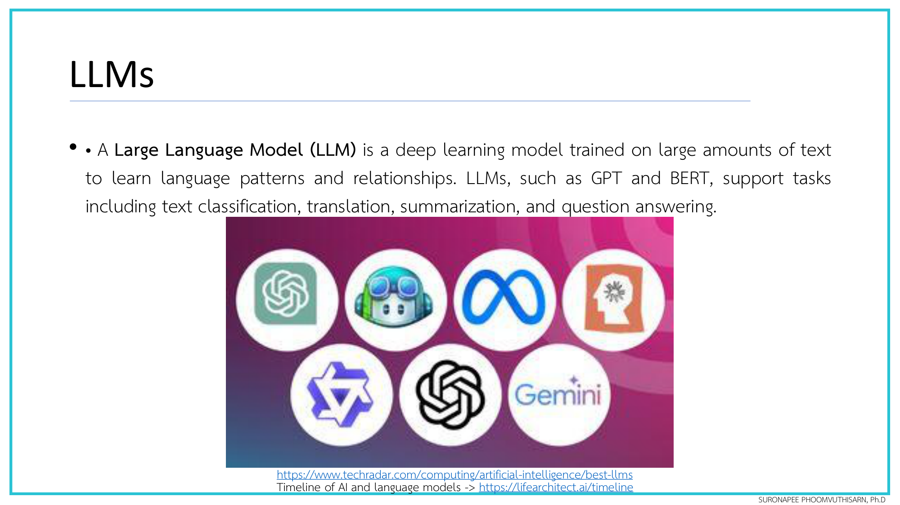
Large Language Model (LLM) คือ deep learning model ที่เทรนบนข้อความปริมาณมหาศาลเพื่อเรียนรูปแบบและความสัมพันธ์ของภาษา. สไลด์ยกตัวอย่างทั้ง GPT (decoder-only) และ BERT (encoder-only) ว่าเป็น LLM ซึ่งรองรับงาน text classification, translation, summarization และ question answering. ทุกตัวสร้างจากบล็อกของ Lesson 11: GPT คือ decoder ที่มี causal mask; BERT คือ encoder stack. ลิงก์ lifearchitect.ai/timeline ให้ timeline ของโมเดลภาษา (ต่อจาก timeline 2017–2021 ในหน้า 26 ของ Lesson 11).
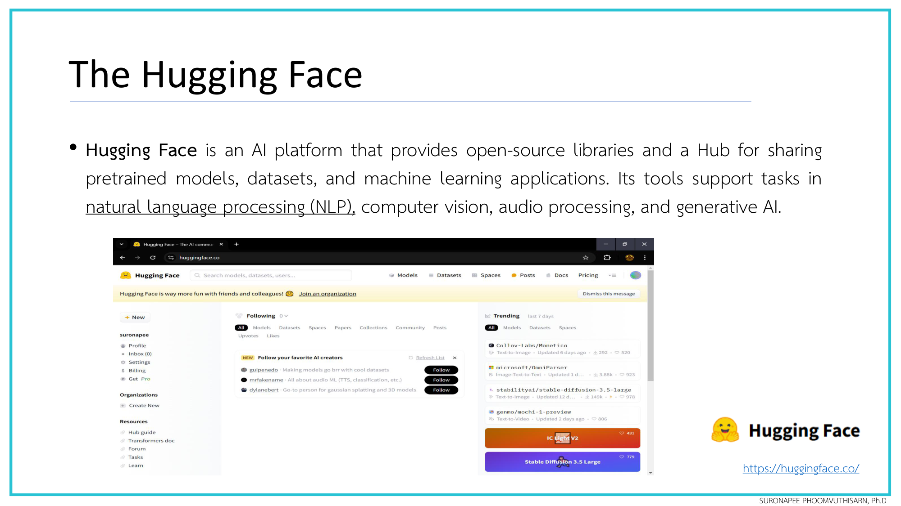
Hugging Face คือแพลตฟอร์ม AI ที่ให้ library แบบ open-source และ Hub สำหรับแบ่งปันโมเดลที่เทรนแล้ว, dataset และแอป machine learning. เครื่องมือรองรับทั้ง NLP, computer vision, audio และ generative AI. ในหน้าจอตัวอย่าง รายการ Trending มีทั้งโมเดลข้อความเป็นรูป (stable-diffusion-3.5-large) และข้อความเป็นวิดีโอ แสดงว่า Hub ไม่ได้มีแค่โมเดลภาษา.
| เหตุผล | ความหมาย | เห็นได้ในบทนี้ที่ |
|---|---|---|
| Pretrained models | ใช้โมเดลซ้ำจาก Hub ไม่ต้องเทรนจากศูนย์ | DistilBERT 66 ล้าน parameter โหลดด้วยบรรทัดเดียว (§10) |
| Consistent APIs | โหลด model/tokenizer ด้วย Auto classes; รันงานด้วย pipeline() | §2–3, §9 |
| Task adaptation | fine-tune ด้วย head เฉพาะงาน เช่น classification, NER | §11 |
| Broad coverage | text, vision, audio, multimodal | §1 |
เทียบกับ Keras: ทั้งคู่ทำให้ deep learning ง่ายขึ้นและรองรับ transfer learning แต่ Hugging Face Transformers เน้นใช้และ fine-tune โมเดลที่เทรนแล้ว ส่วน Keras เน้นสร้างและเทรนโมเดลของเราเอง (Lesson 11 สร้าง TransformerEncoder เองใน Keras). หมายเหตุ: Transformers v5 ใช้ PyTorch เป็น backend หลัก โค้ดในบทนี้จึงเป็น PyTorch (torch.no_grad(), .to(device)).
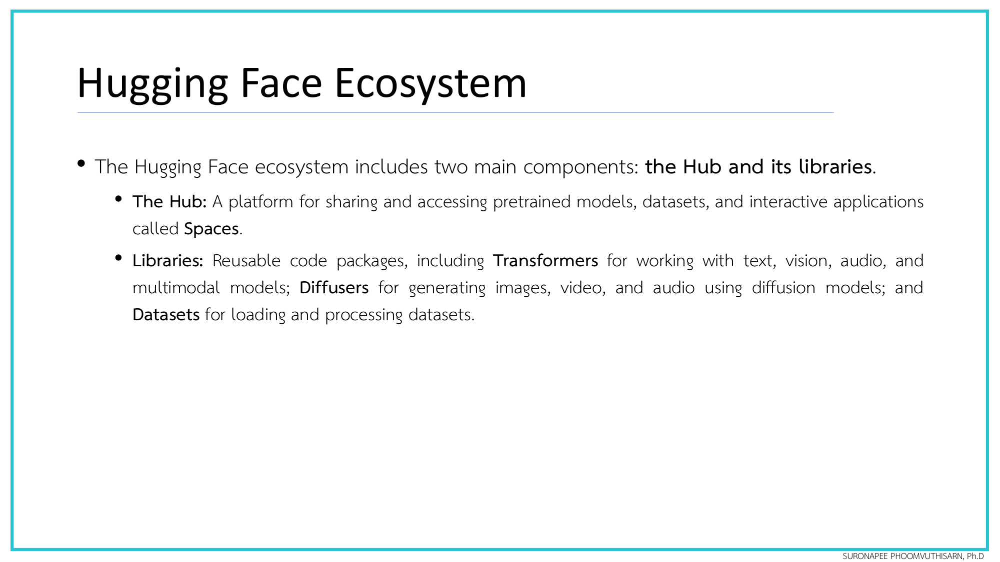
Ecosystem มีสององค์ประกอบหลัก:
ใน workshop ทุกชิ้นมาจาก Hub: dataset "emotion" โหลดด้วย Datasets, checkpoint distilbert-base-uncased โหลดด้วย Transformers.
![Slide: Three Core Libraries. Datasets: simplifies loading, preprocessing and managing datasets; evaluation metrics provided separately through Evaluate. Tokenizers: fast methods for splitting text into tokens and converting them into numerical IDs; supports special tokens, padding, truncation; contextual understanding is learned by the model rather than the tokenizer. Transformers: model implementations and pretrained weights for BERT, GPT-2, T5; inference and fine-tuning. Flow: Datasets (load and process datasets) -> Tokenizers (tokenize input texts) -> Transformers (load models, train and infer) -> Datasets (load metrics and evaluate models)](../assets/slides/dl12-p06-three-core-libraries.png)
| Library | ทำอะไร | ข้อควรจำ |
|---|---|---|
| Datasets | โหลด, preprocess, จัดการ dataset ทุกชนิดข้อมูล | metric สำหรับประเมินผลแยกไปอยู่ใน Evaluate |
| Tokenizers | ตัดข้อความเป็น token และแปลงเป็น ID; เติม special token, padding, truncation | ความเข้าใจบริบทเรียนโดยโมเดล ไม่ใช่ tokenizer |
| Transformers | โครงโมเดลและ weight ที่เทรนแล้ว (BERT, GPT-2, T5); inference และ fine-tuning | ปรับโมเดลให้เข้ากับงานเฉพาะได้ |
ลำดับของงานหนึ่งชิ้นในแผนภาพลูกศร: Datasets (โหลดข้อมูล) → Tokenizers (ตัดคำ) → Transformers (โหลดโมเดล เทรน ทำนาย) → Datasets/Evaluate (วัดผล). Workshop ใน §8–§11 เดินตามลำดับนี้ทุกขั้น.
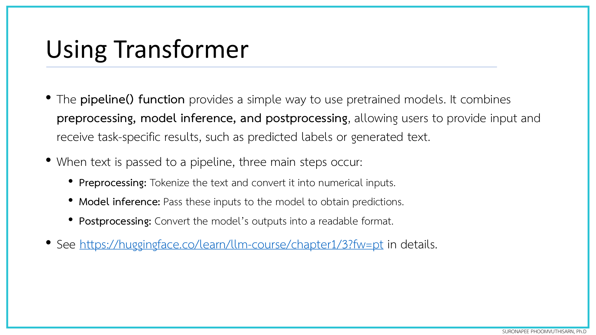
pipeline() รวมสามขั้นไว้ในคำสั่งเดียว ผู้ใช้ส่งข้อความเข้า แล้วได้ผลตามงาน (label ที่ทำนายหรือข้อความที่สร้าง):
![Slide: Example of Text Classification. Use the pipeline() function to classify the sentiment of sample movie reviews; by default, the text-classification pipeline loads a sentiment analysis model; with an appropriate model, multiclass or multilabel classification. Code: from transformers import pipeline; classifier_pipeline = pipeline("text-classification"); classifier_pipeline("This film is one of the classics of cinema history ... somewhat poorly done."). Output [{'label': 'NEGATIVE', 'score': 0.7022482752799988}]](../assets/slides/dl12-p08-text-classification-pipeline.png)
from transformers import pipeline
# instantiate a pipeline and providing the name of the task we are interested in
classifier_pipeline = pipeline("text-classification")
# generate some predictions
classifier_pipeline("This film is one of the classics of cinema history. It was not made to please modern audiences, \
so some people nowadays may think it is creaky or stilted. ... The subtitles were strangely worded, and it\'s \
hard for me to tell whether this was to reflect an older manner of speaking, or whether the subtitles were just somewhat poorly done.")| โค้ด | ทำอะไร |
|---|---|
| pipeline("text-classification") | ระบุเฉพาะชื่องาน ไม่ระบุโมเดล ⇒ โหลดโมเดล sentiment analysis ตั้งต้น (บวก/ลบ) |
| classifier_pipeline("...") | ทำทั้งสามขั้นของหน้า 7 แล้วคืน list ของ dict |
| [{'label': 'NEGATIVE', 'score': 0.7022…}] | label ที่ความน่าจะเป็นสูงสุดและความน่าจะเป็นนั้น |
รีวิวนี้ชมว่า "classics of cinema history" และ "music was beautiful" แต่ติเรื่องเสียงและคำบรรยาย โมเดลตอบ NEGATIVE ด้วย score เพียง 0.70 ซึ่งแปลว่า POSITIVE ได้ราว 0.30: ความไม่แน่ใจสะท้อนรีวิวที่ปนสองทาง. ถ้าเปลี่ยนเป็นโมเดลที่เหมาะสม งานเดียวกันทำได้ทั้ง multiclass (หนึ่ง label ต่อข้อความ เช่น 6 อารมณ์ใน workshop) และ multilabel (หลาย label ต่อข้อความ).
![Slide: Example of Name Entity Recognition. NER identifies and classifies named entities such as people, organizations, and locations; in movie reviews it can identify actors, directors or movie titles provided the model supports these entity categories. Code: pipeline("ner", aggregation_strategy="simple"); result = classifier_pipeline("I would like to know whether the actors from the Apple company were using archaic Russian or even Old Church"); print(pd.DataFrame(result)). Output: ORG 0.995806 Apple 49 54; MISC 0.997995 Russian 82 89; MISC 0.864037 Old Church 98 108](../assets/slides/dl12-p09-ner-pipeline.png)
Named Entity Recognition (NER) ระบุและจัดกลุ่มชื่อเฉพาะในข้อความ เช่น คน องค์กร สถานที่. ในรีวิวหนังอาจใช้หานักแสดง ผู้กำกับ หรือชื่อหนังได้ ถ้าโมเดลรองรับประเภท entity เหล่านั้น.
classifier_pipeline = pipeline("ner", aggregation_strategy="simple")
result = classifier_pipeline("I would like to know whether the actors from the Apple company \
were using archaic Russian or even Old Church")
print(pd.DataFrame(result))| entity_group | score | word | start | end |
|---|---|---|---|---|
| ORG | 0.995806 | Apple | 49 | 54 |
| MISC | 0.997995 | Russian | 82 | 89 |
| MISC | 0.864037 | Old Church | 98 | 108 |
start/end คือตำแหน่งตัวอักษรในข้อความ: "Apple" เริ่มที่ตัวที่ 49 และยาว 5 ตัว ⇒ end = 54. aggregation_strategy="simple" รวม token ย่อยที่ติดกันและมี entity เดียวกันเป็นคำเดียว จึงได้ "Old Church" (2 คำ, 98→108) เป็นแถวเดียว ไม่ใช่สองแถว. "Old Church" ได้ score ต่ำสุด (0.864) เพราะเป็นชื่อเฉพาะที่ไม่ครบ (ชื่อเต็มคือ Old Church Slavonic).
![Slide: Example of Question Answering. In extractive question answering we provide a context passage along with a question; the model identifies a span of text within the context that answers the question (not supported in latest version of transformer 5.x). Code: pipeline("question-answering"); question = "How does the author feel about this movie"; text = "The music was beautiful; I was listening to it in the library."; output: defaulted to distilbert-base-cased-distilled-squad; score 0.2515, start 0, end 23, answer 'The music was beautiful'](../assets/slides/dl12-p10-question-answering-pipeline.png)
Extractive question answering: ให้ context กับคำถาม แล้วโมเดลหาช่วงข้อความ (span) ใน context ที่ตอบคำถาม ไม่ได้แต่งคำตอบใหม่. ตัวอย่าง: question "How does the author feel about this movie", context "The music was beautiful; I was listening to it in the library." ⇒ answer = context[0:23] = "The music was beautiful" (score 0.2515). Score ต่ำเพราะ context ไม่ได้บอกความรู้สึกต่อหนังตรงๆ โมเดลจึงเลือกช่วงที่ใกล้ที่สุดเท่าที่มี. ข้อสังเกตสองข้อ: pipeline ไม่ได้ระบุโมเดลจึงใช้ค่าตั้งต้น distilbert-base-cased-distilled-squad (มีคำเตือนว่าไม่แนะนำใน production) และสไลด์ระบุว่างาน question-answering แบบนี้ไม่รองรับใน transformers รุ่นล่าสุด (5.x).
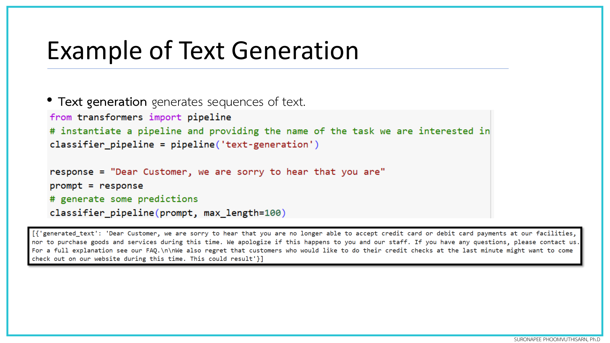
Text generation สร้างลำดับข้อความต่อจาก prompt: นี่คือ language model ของ Lesson 11 §1 ในรูป decoder-only (ค่าตั้งต้นคือ GPT-2). Prompt "Dear Customer, we are sorry to hear that you are" ถูกเติมเป็นจดหมายตอบลูกค้าเรื่องรับบัตรเครดิตไม่ได้ ซึ่งลื่นไหลแต่เนื้อหาแต่งขึ้นเอง. max_length=100 คือจำนวน token สูงสุดของข้อความรวม prompt ข้อความจึงถูกตัดกลางประโยค ("This could result").
![Slide: Example of Summarization. Text summarization aims to take a long text and generate a concise version that includes all relevant facts; more complex as it requires coherent and meaningful text. Code: pipeline("summarization"); text = the movie review; classifier_pipeline(text, max_length=56, clean_up_tokenization_spaces=True). Output summary_text: This film is one of the classics of cinema history. It was not made to please modern audiences, so some people nowadays may think it is creaky or stilted. Cherkassov has exactly the right presence to play Alexander Nevskyi, just as](../assets/slides/dl12-p12-summarization-pipeline.png)
Text summarization รับข้อความยาวแล้วสร้างฉบับสั้นที่ครอบคลุมข้อเท็จจริงสำคัญ. ยากกว่างานก่อนหน้าเพราะโมเดลต้องสร้างข้อความที่ต่อเนื่องและมีความหมาย (encoder-decoder เช่น BART/T5). ผลจริงในสไลด์: summary กลายเป็นสามประโยคแรกของรีวิวแทบคำต่อคำ และถูกตัดที่ "just as" เพราะ max_length=56 token. ข้อสรุปเรื่องเสียงและคำบรรยาย (ส่วนที่ติ) หายไปทั้งหมด จึงยังไม่ได้ "all the relevant facts" ตามนิยาม.
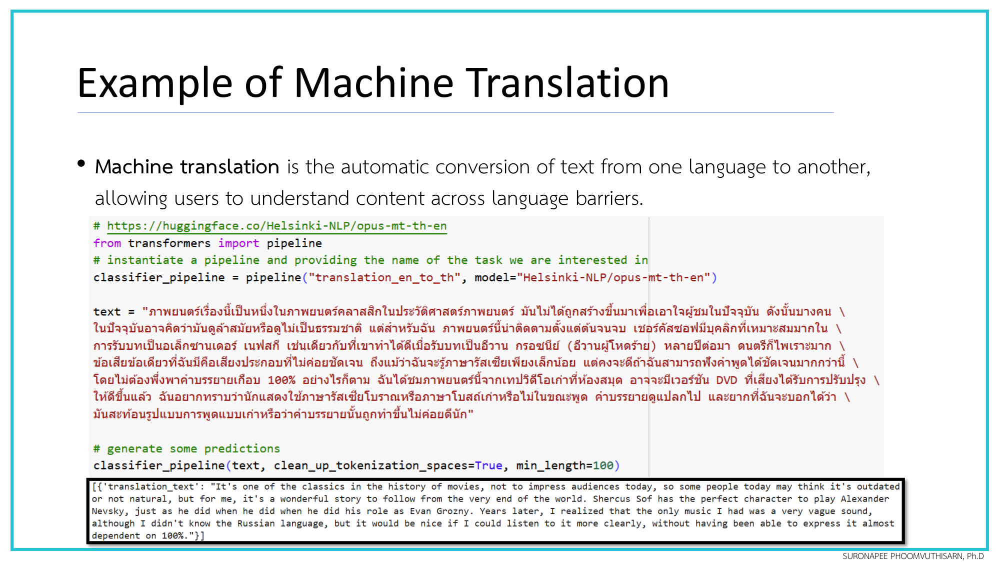
Machine translation แปลงข้อความจากภาษาหนึ่งเป็นอีกภาษาโดยอัตโนมัติ. ตัวอย่างนี้แปลรีวิวภาษาไทยเป็นอังกฤษด้วย model="Helsinki-NLP/opus-mt-th-en" (ชื่อบอกทิศ: th → en). สังเกตว่าชื่องานในโค้ดเขียน "translation_en_to_th" ซึ่งกลับทิศกับโมเดล แต่เมื่อระบุ model= แล้ว ทิศการแปลมาจากโมเดลที่เลือก ผลจึงเป็นภาษาอังกฤษ. คำแปลจับใจความได้ ("one of the classics in the history of movies") แต่ชื่อเฉพาะเพี้ยน เช่น เชอร์คัสซอฟ กลายเป็น "Shercus Sof". min_length=100 บังคับให้ output ยาวอย่างน้อย 100 token.
| ชื่องานใน pipeline() | input | output ในสไลด์ | ชนิด Transformer ที่เหมาะ |
|---|---|---|---|
| "text-classification" | ข้อความ | label + score | encoder-only |
| "ner" | ข้อความ | entity_group, score, word, start, end | encoder-only |
| "question-answering" | question + context | answer (span), score, start, end | encoder-only |
| "text-generation" | prompt | generated_text | decoder-only |
| "summarization" | ข้อความยาว | summary_text | encoder-decoder |
| "translation_xx_to_yy" | ข้อความภาษาต้นทาง | translation_text | encoder-decoder |
pipeline("ner", aggregation_strategy="simple") กับข้อความ "We met Tim Cook in Paris" ข้อใดอธิบายผลของ aggregation_strategy="simple" ได้ถูกต้อง?![Slide: Using Tokenizer and Model. The pipeline groups three steps: preprocessing with tokenizers, passing the inputs through the model, and postprocessing. Diagram: Raw text This course is amazing -> Tokenizer -> Input IDs [101, 2023, 2607, 2003, 6429, 999, 102] -> Model -> Logits [-4.3630, 4.6859] -> Post Processing -> Predictions POSITIVE 99.89% NEGATIVE 0.11%. The tokenizer handles text and returns IDs; the model handles IDs and outputs a prediction; the tokenizer can convert predictions back to text](../assets/slides/dl12-p14-tokenizer-and-model.png)
เปิดฝาดู pipeline: tokenizer รับข้อความแล้วคืน ID; model รับ ID แล้วคืนผลทำนาย; tokenizer ใช้อีกครั้งได้เพื่อแปลงผลกลับเป็นข้อความ (ในงานสร้างข้อความ).
ได้ POSITIVE ≈ 99.99% และ NEGATIVE ≈ 0.01%. หมายเหตุ: แผนภาพในสไลด์พิมพ์ POSITIVE 99.89% / NEGATIVE "0.,11%" ซึ่งไม่ตรงกับ softmax ของ logit ที่แสดง (ถ้าจะได้ 99.89% ผลต่าง logit ต้องเป็นราว 6.8). ใช้แผนภาพเพื่อจำลำดับ Raw text → Input IDs → Logits → Predictions; ถ้าข้อสอบให้ logit มา ให้คำนวณ softmax เอง. ID 101 และ 102 คือ [CLS] และ [SEP] ซึ่งตรงกับตาราง special token ใน §9.
![Slide: Visualize Attention Weights. Use the BertViz library to explore attention in transformer models; the neuron_view module traces how query and key vectors combine to produce attention weights; load the BERT checkpoint using BertViz's compatible model class and generate an interactive visualization with show(). Code: from bertviz.transformers_neuron_view import BertModel; from bertviz.neuron_view import show; model_ckpt = "bert-base-uncased"; text = "The train left station on time."; show(model, "bert", tokenizer, text, display_mode="light", layer=0, head=8). View: Layer 0 Head 8, train attending to station](../assets/slides/dl12-p15-visualize-attention-bertviz.png)
ใช้ library BertViz ดู attention ใน Transformer. module neuron_view ให้ไล่ดูว่า query และ key vector รวมกันเป็น attention weight อย่างไร (ขั้น \(QK^T\) → scale → softmax ของ Lesson 11 §11).
from transformers import AutoTokenizer
from bertviz.transformers_neuron_view import BertModel
from bertviz.neuron_view import show
model_ckpt = "bert-base-uncased"
# Load tokenizer and model
tokenizer = AutoTokenizer.from_pretrained(model_ckpt)
model = BertModel.from_pretrained(model_ckpt)
# Text input and neuron visualization
text = "The train left station on time."
show(model, "bert", tokenizer, text, display_mode="light", layer=0, head=8)| โค้ด | ทำอะไร |
|---|---|
| from bertviz.transformers_neuron_view import BertModel | ต้องใช้ BertModel รุ่นของ BertViz (ไม่ใช่ของ transformers) เพื่อให้ดึง query/key ภายในได้ |
| "bert-base-uncased" | BERT ขนาด base: 12 layer × 12 head, ไม่แยกตัวพิมพ์ใหญ่-เล็ก |
| show(..., layer=0, head=8) | แสดง head หมายเลข 8 ของ layer แรก (นับจาก 0) |
ประโยคเดียวกับตัวอย่าง self-attention ใน Lesson 11 §10 ("the train left the station on time"). ใน layer 0 head 8 คำว่า "train" ให้ weight สูงกับ "station" ซึ่งเป็นความสัมพันธ์ "train station" แบบที่ self-attention ควรเรียน. BERT base มี 12 × 12 = 144 head ให้เลือกดู และแต่ละ head โฟกัสต่างกัน (multi-head = different semantic aspects).
![Slide: Continue. To visualize attention weights extracted from a T5 model using Matplotlib: extract the attention weights, select a specific layer and head, use Matplotlib to plot. Code: model_ckpt = "t5-small"; T5ForConditionalGeneration with attn_implementation="eager"; input_text = "The house is wonderful"; target_text = "La maison est magnifique"; outputs = model(**inputs, labels=target_ids, output_attentions=True, use_cache=False, return_dict=True); attn = outputs.cross_attentions[layer][0, head].cpu().numpy(). Heatmap Attention Weights Layer 0 Head 0: decoder tokens La, maison, est, magnifique, </s> versus encoder tokens The, house, is, wonderful, </s>](../assets/slides/dl12-p16-visualize-attention-t5.png)
อีกวิธี: ดึง attention ของ T5 (encoder-decoder) แล้ว plot ด้วย Matplotlib ในสามขั้น: ดึง attention weight → เลือก layer และ head → plot.
# Load T5 using eager attention so attention weights can be returned
model_ckpt = "t5-small"
tokenizer = T5Tokenizer.from_pretrained(model_ckpt)
model = T5ForConditionalGeneration.from_pretrained(
model_ckpt,
attn_implementation="eager",
)
model.eval() # Disable dropout
input_text = "The house is wonderful"
target_text = "La maison est magnifique"
inputs = tokenizer(input_text, return_tensors="pt")
target_ids = tokenizer(target_text, return_tensors="pt").input_ids
with torch.inference_mode():
outputs = model(
**inputs,
labels=target_ids, # T5 prepares shifted inputs
output_attentions=True, # Return attention weights
use_cache=False,
return_dict=True,
)
# Cross-attention shape per layer: (batch size, number of heads, target length, source length)
layer = 0
head = 0
attn = outputs.cross_attentions[layer][0, head].cpu().numpy()| โค้ด | ทำอะไร |
|---|---|
| attn_implementation="eager" | ใช้ attention แบบคำนวณตรงๆ เพื่อให้คืน weight ได้ (แบบเร่งความเร็วไม่เก็บ weight) |
| labels=target_ids | ให้คำแปลที่ถูก T5 จะเลื่อนเป็น decoder input เอง (teacher forcing ของ Lesson 11 §3) |
| output_attentions=True | คืน attention weight ทุก layer |
| outputs.cross_attentions[layer][0, head] | cross attention ของ layer และ head ที่เลือก, ตัวอย่างที่ 0 ใน batch ⇒ matrix (target length, source length) |
Heatmap Layer 0 Head 0 มี 5 × 5 ช่อง: แถว = token ฝรั่งเศส (La, maison, est, magnifique, </s>) และคอลัมน์ = token อังกฤษ (The, house, is, wonderful, </s>). ช่องสว่างเรียงเป็นเส้นทแยง: La↔The, maison↔house, est↔is, magnifique↔wonderful เพราะสองประโยคเรียงคำตรงกัน. นี่คือ cross attention ของ Lesson 11 §12 (query = target, key/value = source) และเป็นข้อดี "Explainability" ของ Transformer.
outputs.cross_attentions[0]?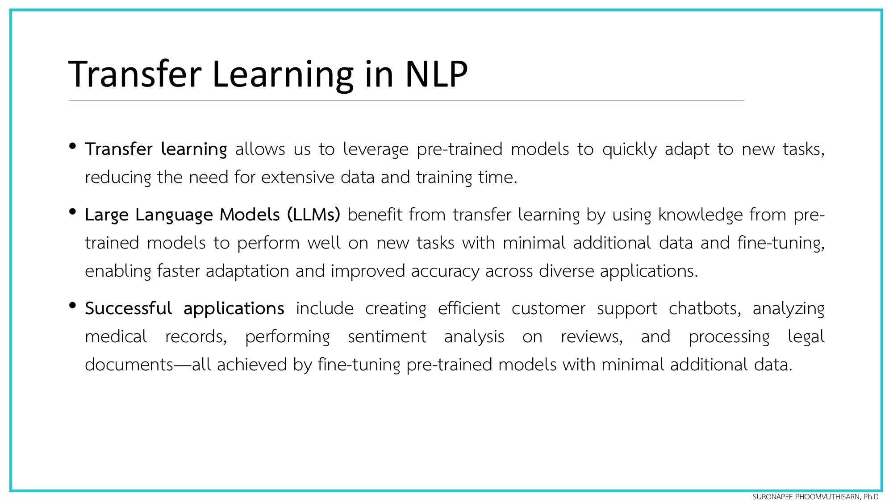
ตัวเลขจาก workshop: DistilBERT ถูก pretrain บนข้อความหลายพันล้านคำ แต่เราใช้ tweet เพียง 16,000 ข้อความ fine-tune 5 epoch (ราว 193 วินาทีบน GPU) ได้ test accuracy 0.9235 (§11). การเทรน Transformer ขนาดนี้จากศูนย์ด้วย 16,000 ข้อความทำไม่ได้จริง.
![Slide: Approaches for Using and Adapting Pre-trained Models. Table: Direct inference (no additional training; use a pretrained task-specific model immediately); Prompting zero-shot/few-shot (input instructions or examples, weights unchanged; guide a generative model without training); Feature extraction + classifier (train an external classifier; pretrained model frozen; classification with limited computing resources); Full fine-tuning (update all model parameters; adapt to task-specific data); PEFT such as LoRA (train a small subset of parameters or added adapters; lower training memory and storage); RAG (retrieve external information and add to the input; usually no model training; answer using private, external or updated knowledge)](../assets/slides/dl12-p18-approaches-pretrained.png)
| Approach | อะไรถูกเทรน/เปลี่ยน | ใช้เมื่อ | ในบทนี้ |
|---|---|---|---|
| Direct inference | ไม่เทรนเพิ่ม | มีโมเดลเฉพาะงานอยู่แล้ว ใช้ทันที | pipeline() §2–3 |
| Prompting (zero-shot / few-shot) | ใส่คำสั่งหรือตัวอย่างใน input; weight ไม่เปลี่ยน | ชี้นำ generative model โดยไม่เทรน | prompt "Dear Customer…" §3 |
| Feature extraction + classifier | เทรน classifier ภายนอก; pretrained model แช่แข็ง | classification ที่ทรัพยากรคำนวณจำกัด | §10 (acc 0.635) |
| Full fine-tuning | update parameter ทั้งหมด | ปรับโมเดลเข้ากับข้อมูลเฉพาะงาน | §11 (acc 0.9235) |
| PEFT เช่น LoRA | เทรน parameter ส่วนเล็กหรือ adapter ที่เพิ่ม | ต้องการประหยัดหน่วยความจำและพื้นที่เก็บ | §6 (acc 0.9005) |
| RAG | ค้นข้อมูลภายนอกแล้วเติมใน input; ปกติไม่เทรน | ตอบด้วยความรู้ส่วนตัว ภายนอก หรือที่อัปเดต | §7 |
เรียงจากบนลงล่างคร่าวๆ ตามปริมาณที่ต้องเทรน: สองแถวแรกไม่เทรนเลย; feature extraction เทรนแค่ classifier; full fine-tuning เทรนทั้ง 66,958,086 parameter; LoRA เทรนเพียง 742,662 parameter; RAG เปลี่ยนinput แทน weight.
![Slide: Parameter-Efficient Fine-Tuning (PEFT): Why LoRA? Full fine-tuning updates all pretrained model parameters for a downstream task; challenge: large models require substantial GPU memory, computation and storage for each fine-tuned model. PEFT freezes most pretrained parameters and trains only a small set of task-specific parameters. LoRA (Low-Rank Adaptation): a PEFT method that learns compact updates to selected weight matrices instead of updating the original matrices. Diagram: full fine-tuning (pretrained model, all weights trainable, save a full model for each task) versus PEFT with LoRA (pretrained model original weights frozen, small LoRA adapters trainable)](../assets/slides/dl12-p19-peft-why-lora.png)
ตัวเลข: ถ้ามี 10 งาน full fine-tuning ของ DistilBERT ต้องเก็บ 10 × 66,958,086 ≈ 670 ล้าน parameter; LoRA เก็บโมเดลเต็มชุดเดียว + adapter 10 × 742,662 ≈ 7.4 ล้าน.
![Slide: How LoRA Works: Low-Rank Weight Updates. Instead of updating a large weight matrix, LoRA learns a low-rank correction. Full fine-tuning: W_new = W0 + delta W. LoRA approximates delta W = (alpha/r) B A. Output of the adapted linear layer h = W0 x + (alpha/r) B A x. r: rank of the update; alpha/r: scaling factor; only A and B are trained, W0 frozen; update can be merged into W0 for inference. Diagram: Input x 768 -> Original W0 768 -> 768 frozen, parallel A 768 -> 8 and B 8 -> 768, summed to Output 768. For DistilBERT with hidden dimension 768 and rank r = 8: full matrix 768 x 768 with 589,824 trainable parameters; LoRA update A 8 x 768, B 768 x 8 with 12,288](../assets/slides/dl12-p20-how-lora-works.png)
LoRA ไม่ update matrix ใหญ่ แต่เรียน "การแก้แบบ low-rank":
$$W_{new} = W_0 + \Delta W \qquad \Delta W = \frac{\alpha}{r} BA \qquad h = W_0 x + \frac{\alpha}{r} BAx$$W0 แช่แข็ง; เทรนเฉพาะ A (r × d) และ B (d × r); ผลคูณ BA มีขนาด d × d เท่า W0 แต่ rank ไม่เกิน r
LoRA เทรน 12,288 ตัวแทน 589,824 ตัว (น้อยกว่า 48 เท่า) ต่อ matrix. Shape ตามแผนภาพ: input x (768) → A ลดเป็น 8 มิติ → B ขยายกลับเป็น 768 แล้วบวกกับ \(W_0 x\). ตอนเริ่มเทรน B ถูกตั้งเป็นศูนย์ \(BA = 0\) โมเดลจึงเริ่มเหมือน pretrained model ทุกประการ.
![Slide: Applying LoRA to Transformer Attention. LoRA can be applied to selected linear layers, commonly attention projections. In DistilBERT each Transformer layer contains Query, Key, Value and attention output projection matrices, each 768 x 768. Workshop configuration: lora_config = LoraConfig(task_type=TaskType.SEQ_CLS, r=8, lora_alpha=16, lora_dropout=0.1, target_modules=["q_lin", "v_lin"], modules_to_save=["pre_classifier", "classifier"]). Objective: compare LoRA with full fine-tuning in trainable parameters, training time, test accuracy and macro F1. Diagram: Query WQ LoRA, Key WK frozen, Value WV LoRA, split Q,K,V into 12 heads 64 dimensions per head, attention output projection WO frozen, FFN frozen; same configuration in each of DistilBERT's six layers](../assets/slides/dl12-p21-lora-attention.png)
lora_config = LoraConfig(
task_type=TaskType.SEQ_CLS,
r=8, # rank 8 for Query and Value
lora_alpha=16, # scale updates by 16/8 = 2
lora_dropout=0.1,
target_modules=["q_lin", "v_lin"],
modules_to_save=["pre_classifier", "classifier"],
)| โค้ด | ทำอะไร |
|---|---|
| task_type=TaskType.SEQ_CLS | งาน sequence classification (หนึ่ง label ต่อข้อความ) |
| r=8, lora_alpha=16 | rank 8, scale 16/8 = 2 |
| lora_dropout=0.1 | dropout บนเส้นทางของ LoRA ระหว่างเทรน |
| target_modules=["q_lin", "v_lin"] | เติม LoRA ให้ Query และ Value projection เท่านั้น; Key, output projection (WO) และ FFN แช่แข็ง |
| modules_to_save=["pre_classifier", "classifier"] | head ใหม่ถูกเทรนเต็มที่ (ไม่ใช่ LoRA) เพราะ head เริ่มจาก weight สุ่ม ไม่มีความรู้เดิมให้รักษา |
ตรงกับผลของผู้สอน: trainable 742,662 / 67,700,748 (1.10%). Total มากกว่าโมเดลเดิม (66,958,086) พอดี 742,662 เพราะ PEFT เก็บ adapter และสำเนาของ head แยกไว้. แผนภาพในสไลด์ยังเตือนว่า Q, K, V ถูกแบ่งเป็น 12 head × 64 มิติ (768/12) ตาม Lesson 11 §11 และ LoRA เติมก่อนแบ่ง head.
| ผลใน notebook ของผู้สอน | Full fine-tuning | LoRA (r = 8) |
|---|---|---|
| Trainable parameters | 66,958,086 (100%) | 742,662 (1.10%) |
| Test accuracy | 0.9235 | 0.9005 |
| Test macro F1 | 0.8754 | 0.8497 |
| Training time | เทียบฐาน | น้อยกว่าราว 26% |
LoRA เสีย accuracy ไป 2.3 จุด แต่เทรน parameter เพียง 1.1%. เวลาไม่ได้ลดตามจำนวน parameter (ลดแค่ ~26%) เพราะ forward และ backward ยังต้องผ่านทั้งโมเดล; สิ่งที่ประหยัดจริงคือหน่วยความจำของ optimizer และพื้นที่เก็บโมเดลต่องาน.
target_modules=["q_lin", "v_lin"] และ modules_to_save=["pre_classifier", "classifier"] กับ DistilBERT ข้อใดถูกต้อง?![Slide: RAG retrieves relevant external information and adds it to a generative model's input to help answer a question without retraining the generator. Update the knowledge base and its embeddings without retraining the generator. Similarity scores measure retrieval relevance, not correctness or confidence. Workshop: build a knowledge base of workshop notes; retrieve relevant notes using all-MiniLM-L6-v2 to embed question and documents and select top-k by cosine similarity; generate an answer by providing question and retrieved notes to FLAN-T5-small. Prompt: Answer the question using only the context below. If the answer is missing, say Information unavailable. Context: Source: Workshop setup ... maximum length of 64 tokens. Question: Which model and maximum token length does this workshop use?](../assets/slides/dl12-p22-rag.png)
RAG ค้นข้อมูลภายนอกที่เกี่ยวข้องแล้วเติมเข้าใน input ของ generative model เพื่อช่วยตอบคำถาม โดยไม่ต้องเทรน generator ใหม่:
ขั้นตอนใน workshop:
all-MiniLM-L6-v2 แปลงคำถามและเอกสารเป็น embedding แล้วเลือก top-k ตาม cosine similarityFLAN-T5-smallเมื่อ normalize embedding ให้ยาว 1 แล้ว (normalize_embeddings=True ใน notebook) dot product เท่ากับ cosine similarity. ผลจริงของผู้สอนกับคำถามเรื่อง max token length และ metric: Workshop setup 0.420, Feature extraction 0.244, Workshop evaluation 0.227. แต่ FLAN-T5-small ตอบเพียง "2." ทั้งที่ top-k = 1 และ 3 และตอนไม่มี retrieval ตอบซ้ำ "a metric that is…" วนไม่จบ: ค้นถูกไม่ได้แปลว่าตอบถูก ตรงกับข้อความ "similarity scores measure retrieval relevance, not correctness".
![Slide: Example on Text Classification. Text classification is a key task in NLP, e.g. categorizing customer feedback or filtering spam; sentiment analysis identifies polarity of text, such as tweets about Tesla's new car roofs. To build an emotion detector we use a dataset from a study on how emotions are represented in English Twitter messages, with six basic emotions: anger, disgust, fear, joy, sadness, and surprise; classify tweets into one of these emotions; adapted from NLP with Transformers. We use DistilBERT, a smaller more efficient version of BERT with similar performance; switching to a larger BERT is as simple as changing the checkpoint](../assets/slides/dl12-p23-text-classification-workshop.png)
• Text classification เป็นงานหลักของ NLP เช่น จัดหมวด feedback ลูกค้าหรือกรองอีเมลสแปม. Sentiment analysis เป็นรูปหนึ่งของ text classification ที่ระบุขั้วของข้อความ (บวก/ลบ).
Workshop สร้างตัวตรวจจับอารมณ์จาก dataset ของงานวิจัยว่าอารมณ์ปรากฏใน tweet ภาษาอังกฤษอย่างไร. ต่างจาก sentiment ทั่วไป dataset นี้มีหกอารมณ์พื้นฐานตามสไลด์: anger, disgust, fear, joy, sadness และ surprise. งานคือจำแนกแต่ละ tweet เป็นหนึ่งในหกอารมณ์ (multiclass).
หมายเหตุสำคัญ: label จริงของ dataset "emotion" คือ sadness, joy, love, anger, fear, surprise (index 0–5). สไลด์หน้านี้เขียน "disgust" แทน "love" แต่กราฟหน้า 27 และ notebook ใช้ love. ใช้รายการของ dataset เมื่อเขียนโค้ด และจำว่าสไลด์ระบุ disgust ถ้าข้อสอบถามข้อความตามสไลด์.
โมเดลที่ใช้คือ DistilBERT ซึ่งเล็กและเร็วกว่า BERT แต่ประสิทธิภาพใกล้เคียง (6 layer แทน 12, ราว 66 ล้าน parameter แทน 110 ล้าน) จึงเทรน classifier ได้เร็ว และเปลี่ยนเป็น BERT ตัวใหญ่ได้ด้วยการเปลี่ยนชื่อ checkpoint เท่านั้น.
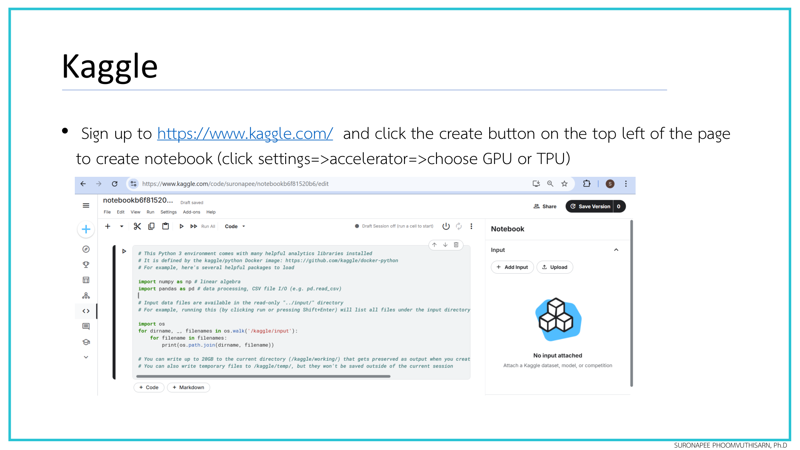
Workshop รันบน Kaggle: สมัครที่ kaggle.com, กด Create เพื่อสร้าง notebook แล้วเลือก Settings → Accelerator → GPU หรือ TPU. ต้องใช้ GPU เพราะ full fine-tuning ของ DistilBERT 5 epoch ใช้ราว 193 วินาทีบน GPU แต่บน CPU นานกว่าหลายสิบเท่า. Feature extraction (§10) เป็นทางเลือกเมื่อไม่มี GPU.
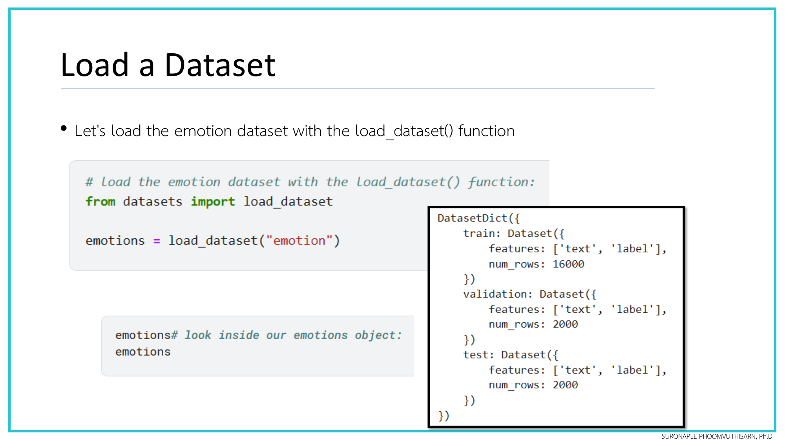
# load the emotion dataset with the load_dataset() function:
from datasets import load_dataset
emotions = load_dataset("emotion")
emotions # look inside our emotions objectผลเป็น DatasetDict ที่มีสาม split แต่ละ split มี features ['text', 'label']: train 16,000, validation 2,000, test 2,000 แถว รวม 20,000 (สัดส่วน 80:10:10). Dataset แบ่ง split มาให้แล้ว จึงไม่ต้อง shuffle และตัดเองแบบ NMT ใน Lesson 11 §4.
![Slide: Explore the Dataset. Datasets provides a set_format() method to change the output format. Code: import pandas as pd; emotions.set_format(type="pandas"); df = emotions["train"][:]; df.head(). Rows: i didnt feel humiliated 0; i can go from feeling so hopeless to so damned... 0; im grabbing a minute to post i feel greedy wrong 3; i am ever feeling nostalgic about the fireplac... 2; i am feeling grouchy 3. df.info(): RangeIndex 16000 entries, text object, label int64, memory 250.1+ KB](../assets/slides/dl12-p26-explore-dataset.png)
import pandas as pd
emotions.set_format(type="pandas")
df = emotions["train"][:]
df.head()set_format(type="pandas") เปลี่ยนรูปแบบ output ของ Dataset (ซึ่งเก็บเป็น Arrow table) เป็น pandas DataFrame และเปลี่ยนกลับได้ภายหลัง. ห้าแถวแรก: "i didnt feel humiliated" label 0 (sadness), "i am ever feeling nostalgic about the fireplac…" label 2 (love), "i am feeling grouchy" label 3 (anger). ข้อความเป็นตัวพิมพ์เล็กทั้งหมดและไม่มีเครื่องหมายวรรคตอน (เช่น "didnt"). df.info() ยืนยัน 16,000 แถว ไม่มีค่าว่าง; label เป็น int64 จึงต้องแปลงเป็นชื่อด้วย int2str เพื่อดูผล.
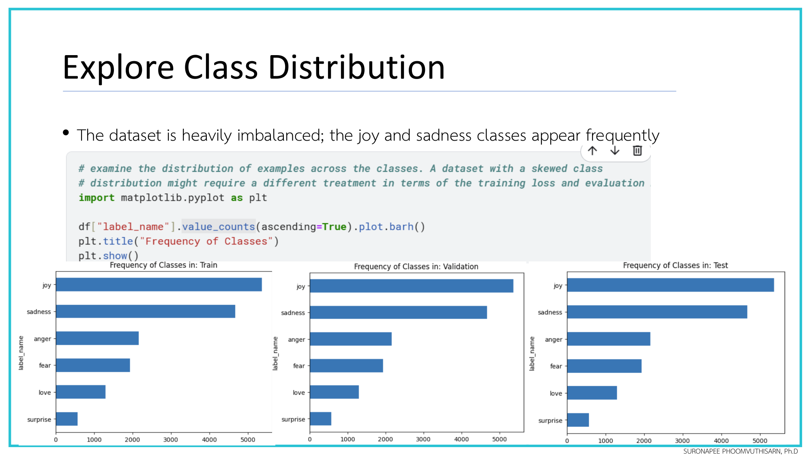
joy กับ sadness รวมกัน 62.7% ⇒ "heavily imbalanced". โมเดลที่ทาย joy อย่างเดียวได้ accuracy 33.5% แต่ macro F1 เพียง 0.084 (F1 ของ joy = 2 × 0.335 × 1 / 1.335 = 0.50, คลาสอื่น = 0). Notebook จึงเลือกโมเดลด้วย macro F1 ไม่ใช่ accuracy. ข้อสังเกตเรื่องกราฟ: แกน x ของกราฟ validation และ test ยาวถึง 5,000 เท่ากับ train ทั้งที่แต่ละ split มีเพียง 2,000 แถว ให้ใช้กราฟดูลำดับของคลาสเท่านั้น.
![Slide: How Long Are Our Tweets? Estimate tweet lengths per emotion via distribution of words per tweet: for each emotion, most tweets are around 15 words long and the longest tweets contain 50 words. Code: df["Words Per Tweet"] = df["text"].str.split().apply(len); df.boxplot("Words Per Tweet", by="label_name", grid=False, showfliers=False, color="black"). Boxplot for anger, fear, joy, love, sadness, surprise with medians near 15-20 and whiskers up to about 50](../assets/slides/dl12-p28-tweet-length.png)
df["Words Per Tweet"] = df["text"].str.split().apply(len)
df.boxplot("Words Per Tweet", by="label_name", grid=False, showfliers=False,
color="black")
plt.suptitle("")
plt.xlabel("")
plt.show()str.split().apply(len) นับคำด้วยการตัดที่ช่องว่าง เช่น "i am feeling grouchy" = 4 คำ. ทุกอารมณ์ tweet ส่วนใหญ่ยาวราว 15 คำ และยาวสุดราว 50 คำ. ความยาวจึงไม่ใช่ตัวแยกอารมณ์ (กล่องของหกคลาสซ้อนกัน) แต่บอกว่าเกินขีดจำกัดของ DistilBERT (512 token) ไปไกลมาก. Notebook ตั้ง max length 64 token ซึ่งพอสำหรับ 50 คำแม้คำยาวบางคำถูกตัดเป็นหลาย token.
![Slide: Preparation. Transformers provides a convenient AutoTokenizer class to load the tokenizer associated with a pretrained model via from_pretrained(), given the model ID on the Hub or a local path. Code: from transformers import AutoTokenizer; model_ckpt = "distilbert-base-uncased"; tokenizer = AutoTokenizer.from_pretrained(model_ckpt). Alternatively load the specific class manually: from transformers import DistilBertTokenizer; distilbert_tokenizer = DistilBertTokenizer.from_pretrained(model_ckpt)](../assets/slides/dl12-p29-autotokenizer.png)
# from the name of the checkpoint.
from transformers import AutoTokenizer
model_ckpt = "distilbert-base-uncased"
tokenizer = AutoTokenizer.from_pretrained(model_ckpt)
# load the specific class manually
from transformers import DistilBertTokenizer
distilbert_tokenizer = DistilBertTokenizer.from_pretrained(model_ckpt)AutoTokenizer.from_pretrained() รับ ID ของโมเดลบน Hub (หรือ path ในเครื่อง) แล้วเลือก class ของ tokenizer ให้อัตโนมัติ. วิธีที่สองระบุ class เอง (DistilBertTokenizer) ได้ผลเหมือนกันแต่ผูกกับ DistilBERT. ข้อดีของ Auto class: เปลี่ยน model_ckpt เป็น "bert-base-uncased" หรือ "roberta-base" แล้วโค้ดที่เหลือไม่ต้องแก้. Tokenizer ต้องมาจาก checkpoint เดียวกับโมเดลเสมอ เพราะ ID 2023 ของ tokenizer หนึ่งอาจเป็นคนละคำในอีกตัว.
![Slide: How Tokenizer works. text = "Tokenizing text is a core task of NLP."; encoded_text = tokenizer(text); print(encoded_text) -> input_ids [101, 19204, 6026, 3793, 2003, 1037, 4563, 4708, 1997, 17953, 2361, 1012, 102], attention_mask all 1. tokens = tokenizer.convert_ids_to_tokens(encoded_text.input_ids) -> ['[CLS]', 'token', '##izing', 'text', 'is', 'a', 'core', 'task', 'of', 'nl', '##p', '.', '[SEP]']. tokenizer.convert_tokens_to_string(tokens) -> [CLS] tokenizing text is a core task of nlp. [SEP]. Comments: special [CLS] and [SEP] tokens added; tokens lowercased; tokenizing and NLP split into two tokens; ## prefix means preceding string is not whitespace (subword tokenization)](../assets/slides/dl12-p30-how-tokenizer-works.png)
text = "Tokenizing text is a core task of NLP."
encoded_text = tokenizer(text)
print(encoded_text)
tokens = tokenizer.convert_ids_to_tokens(encoded_text.input_ids)
print(tokens)
print(tokenizer.convert_tokens_to_string(tokens))| token | [CLS] | token | ##izing | text | is | a | core |
|---|---|---|---|---|---|---|---|
| input_id | 101 | 19204 | 6026 | 3793 | 2003 | 1037 | 4563 |
| token | task | of | nl | ##p | . | [SEP] | |
| input_id | 4708 | 1997 | 17953 | 2361 | 1012 | 102 |
สิ่งที่เกิดขึ้นสี่อย่าง (ตาม comment ในโค้ด):
## แปลว่าไม่มีช่องว่างนำหน้า ต้องต่อกับ token ก่อนหน้าเมื่อแปลงกลับเป็นข้อความ เรียกว่า subword tokenizationนับได้: 7 คำ + "." = 8 หน่วยในข้อความ แต่ได้ 13 token (+2 จาก subword, +2 จาก special token, +1 จากจุด). attention_mask เป็น 1 ทั้ง 13 ตำแหน่งเพราะยังไม่มี padding. convert_tokens_to_string คืนข้อความ "[CLS] tokenizing text is a core task of nlp. [SEP]" ซึ่งต่อ ## กลับแล้วแต่ยังเป็นตัวพิมพ์เล็ก. ข้อดีของ subword: ไม่มีคำ OOV แบบ [UNK] ใน Lesson 11 §2 เพราะคำแปลกถูกตัดเป็นชิ้นที่รู้จัก.
![Slide: Tokenizing the Whole Dataset. tokenizer.vocab_size 30522; tokenizer.model_max_length 512; tokenizer.model_input_names ['input_ids', 'attention_mask']. Special tokens [PAD] 0, [UNK] 100, [CLS] 101, [SEP] 102, [MASK] 103. def tokenize(batch): return tokenizer(batch["text"], padding=True, truncation=True). emotions_encoded = emotions.map(tokenize, batched=True, batch_size=None); column_names ['text', 'label', 'input_ids', 'attention_mask']; first example input_ids [101, 1045, 2134, 2102, 2514, 26608, 102, 0, ...] attention_mask [1,1,1,1,1,1,1,0,...]](../assets/slides/dl12-p31-tokenize-whole-dataset.png)
| attribute | ค่า | ความหมาย |
|---|---|---|
| vocab_size | 30522 | จำนวน token ใน vocabulary (เทียบ 15,000 คำของ NMT ใน Lesson 11) |
| model_max_length | 512 | ความยาวสูงสุดที่โมเดลรับได้ (จำนวน position embedding) |
| model_input_names | ['input_ids', 'attention_mask'] | input ที่โมเดลต้องการ |
| Special Token | [PAD] | [UNK] | [CLS] | [SEP] | [MASK] |
|---|---|---|---|---|---|
| Special Token ID | 0 | 100 | 101 | 102 | 103 |
# padding=True will pad the examples with zeros to the size of the longest one in a batch,
# truncation=True will truncate the examples to the model's maximum context size.
def tokenize(batch):
return tokenizer(batch["text"], padding=True, truncation=True)
# setting batched=True will encode the tweets in batches.
emotions_encoded = emotions.map(tokenize, batched=True, batch_size=None)
print(emotions_encoded["train"].column_names)
print(emotions_encoded["train"][0])| โค้ด | ทำอะไร |
|---|---|
| padding=True | เติม 0 ([PAD]) จนยาวเท่าข้อความที่ยาวที่สุดใน batch |
| truncation=True | ตัดข้อความที่ยาวเกิน model_max_length (512) |
| emotions.map(tokenize, batched=True, batch_size=None) | ใช้ฟังก์ชันกับทุก split; batch_size=None = ทั้ง split เป็น batch เดียว จึง pad ทุกแถวยาวเท่าแถวที่ยาวสุดของ split |
| column_names | เพิ่มคอลัมน์ input_ids และ attention_mask ต่อจาก text, label |
แถวแรก "i didnt feel humiliated" ได้ input_ids [101, 1045, 2134, 2102, 2514, 26608, 102, 0, 0, …]: "didnt" ถูกตัดเป็น "didn" + "##t" (2134, 2102) จึงได้ 7 token จริงแล้วตามด้วย 0 จำนวนมาก. attention_mask = [1, 1, 1, 1, 1, 1, 1, 0, …] บอกโมเดลให้ไม่สนตำแหน่ง padding: ตำแหน่งที่ mask = 0 ได้คะแนน −∞ ก่อน softmax เหมือน causal mask ของ Lesson 11 §12.
![Slide: Training a Text Classifier. DistilBERT is pretrained to predict masked words; we can't use these language models directly for text classification; we need to modify them slightly. For pretraining, each hidden state is fed to a layer that predicts the masked input tokens; for classification we replace the language modeling layer with a classification layer. Two options: feature extraction (use hidden states as features and train a classifier without modifying the pretrained model) and fine-tuning (train the whole model end-to-end, updating the pretrained parameters)](../assets/slides/dl12-p32-training-text-classifier.png)
DistilBERT ถูก pretrain ให้ทายคำที่ถูก mask ในประโยค (ใส่ [MASK] ID 103 แล้วทายคำเดิม) จึงใช้จำแนกข้อความตรงๆ ไม่ได้ ต้องปรับเล็กน้อย: ตอน pretrain hidden state ทุกตัวถูกส่งเข้า layer ที่ทาย token ที่ถูก mask (output 30,522 คำ); สำหรับ classification เราแทน language modeling layer ด้วย classification layer (output 6 คลาส). มีสองทางเลือก:
| Feature extraction | Fine-tuning | |
|---|---|---|
| ทำอย่างไร | ใช้ hidden state เป็น feature แล้วเทรน classifier แยก | เทรนทั้งโมเดลแบบ end-to-end |
| pretrained weight | ไม่เปลี่ยน | ถูก update |
| เทียบ Lesson 8 | ใช้ CNN เป็น feature extractor | fine-tune ทั้ง CNN |
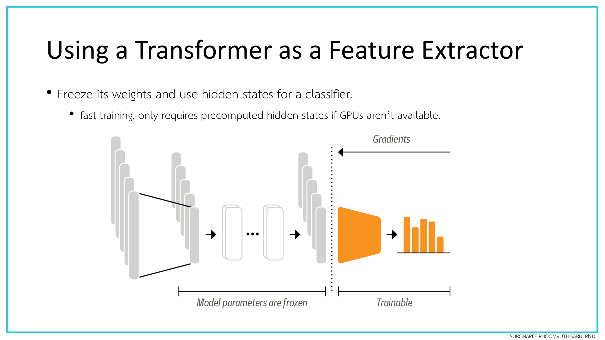
แช่แข็ง weight แล้วใช้ hidden state เป็น input ของ classifier. ข้อดีคือ เทรนเร็ว: คำนวณ hidden state ล่วงหน้าครั้งเดียว (ไม่ต้องใช้ GPU ระหว่างเทรน classifier). ในรูป เส้นประแบ่งสองส่วน: "Model parameters are frozen" ทางซ้าย และ "Trainable" ทางขวา; ลูกศร Gradients หยุดที่เส้นประ ไม่ย้อนเข้า encoder.
![Slide: Load a Pretrained Model. Similar to AutoTokenizer, AutoModel has a from_pretrained() method to load the weights of a pretrained model. Code: from transformers import TFAutoModel, AutoTokenizer, AutoModel; import torch; model_ckpt = "distilbert-base-uncased"; tokenizer = AutoTokenizer.from_pretrained(model_ckpt); device = torch.device("cuda" if torch.cuda.is_available() else "cpu"); model = AutoModel.from_pretrained(model_ckpt).to(device); # tf_model = TFAutoModel.from_pretrained(model_ckpt)](../assets/slides/dl12-p34-load-pretrained-model.png)
from transformers import TFAutoModel, AutoTokenizer, AutoModel
import torch
import tensorflow as tf
# Load the pre-trained tokenizer and model
model_ckpt = "distilbert-base-uncased"
tokenizer = AutoTokenizer.from_pretrained(model_ckpt)
# Load the model and move it to the specified device
# Check if CUDA (GPU) is available and set the device accordingly
device = torch.device("cuda" if torch.cuda.is_available() else "cpu")
model = AutoModel.from_pretrained(model_ckpt).to(device)
# load DistilBERT in TensorFlow by using the TFAutoModel class
#tf_model = TFAutoModel.from_pretrained(model_ckpt)| โค้ด | ทำอะไร |
|---|---|
| torch.device("cuda" if torch.cuda.is_available() else "cpu") | ใช้ GPU ถ้ามี ไม่เช่นนั้นใช้ CPU |
| AutoModel.from_pretrained(model_ckpt) | โหลด body ของ DistilBERT (embedding + encoder 6 layer) ไม่มี head; output คือ hidden states |
| .to(device) | ย้าย weight ไปไว้บนอุปกรณ์ที่เลือก |
| #tf_model = TFAutoModel... | รุ่น TensorFlow ถูก comment ไว้ (Transformers v5 ใช้ PyTorch เป็นหลัก) |
![Slide: Extracting the last hidden states. AutoModel converts token encodings to embeddings and feeds them through the encoder stack to return the hidden states. Encode the string with return_tensors="pt": text = "this is a test"; inputs = tokenizer(text, return_tensors="pt"); Input tensor shape torch.Size([1, 6]). Place on the same device and pass inputs: inputs = {k: v.to(device) for k, v in inputs.items()}; with torch.no_grad(): outputs = model(**inputs); BaseModelOutput(last_hidden_state=tensor(...)); outputs.last_hidden_state.size() torch.Size([1, 6, 768])](../assets/slides/dl12-p35-extract-hidden-states.png)
text = "this is a test"
inputs = tokenizer(text, return_tensors="pt")
print(f"Input tensor shape: {inputs['input_ids'].size()}") # torch.Size([1, 6])
# Move all input tensors to the specified device (GPU or CPU)
inputs = {k: v.to(device) for k, v in inputs.items()}
# Disable gradient computation for inference (saving memory and computation)
with torch.no_grad():
# The '**inputs' unpacks the dictionary so that the model receives each tensor as a keyword argument
outputs = model(**inputs)
print(outputs)
outputs.last_hidden_state.size() # torch.Size([1, 6, 768])| โค้ด | ทำอะไร |
|---|---|
| return_tensors="pt" | คืนเป็น PyTorch tensor (แทน list) shape [1, 6]: batch 1 ข้อความ, 6 token |
| {k: v.to(device) …} | input ต้องอยู่บนอุปกรณ์เดียวกับโมเดล |
| torch.no_grad() | ปิดการคำนวณ gradient เพราะไม่ได้เทรน ประหยัดหน่วยความจำ |
| model(**inputs) | แตก dict เป็น input_ids=…, attention_mask=… |
| last_hidden_state.size() | [batch_size, n_tokens, hidden_dim] = [1, 6, 768] |
ทำไม 6 token: "this is a test" มี 4 คำ + [CLS] + [SEP] = 6. ทุก token ได้ vector 768 มิติ ⇒ \(6 \times 768 = 4{,}608\) ค่าต่อประโยคนี้. Encoder รักษาขนาด ("same size as the inputs" ใน Lesson 11 §10): embedding เข้า [1, 6, 768] ออก [1, 6, 768].
![Slide: Extracting the last hidden states (2). The hidden state tensor has shape [batch_size, n_tokens, hidden_dim]: a 768-dimensional vector for each of the 6 input tokens. For classification, use the hidden state of the [CLS] token: outputs.last_hidden_state[:,0].size() -> torch.Size([1, 768]). def extract_hidden_states(batch): inputs = {k: v.to(device) for k, v in batch.items() if k in tokenizer.model_input_names}; with torch.no_grad(): last_hidden_state = model(**inputs).last_hidden_state; return {"hidden_state": last_hidden_state[:, 0].cpu().numpy()}. emotions_encoded.set_format("torch", columns=["input_ids", "attention_mask", "label"]); emotions_hidden = emotions_encoded.map(extract_hidden_states, batched=True, batch_size=4)](../assets/slides/dl12-p36-extract-hidden-states-2.png)
outputs.last_hidden_state[:,0].size() # torch.Size([1, 768])
def extract_hidden_states(batch):
# Move all model inputs (e.g., input_ids, attention_mask) to the specified device (GPU or CPU)
inputs = {k: v.to(device) for k, v in batch.items()
if k in tokenizer.model_input_names} # Ensure we only pass the model-required input
# Perform inference without tracking gradients (to save memory and computation)
with torch.no_grad():
# Pass the inputs through the model and extract the last hidden state (output of the model)
last_hidden_state = model(**inputs).last_hidden_state
# Extract the hidden state corresponding to the [CLS] token (first token in the sequence)
# `[:,0]` selects the hidden state of the [CLS] token for each example in the batch
# Move the tensor back to CPU and convert it to a NumPy array for easier handling
return {"hidden_state": last_hidden_state[:, 0].cpu().numpy()}
emotions_encoded.set_format("torch", columns=["input_ids", "attention_mask", "label"])
emotions_hidden = emotions_encoded.map(extract_hidden_states, batched=True, batch_size=4)| โค้ด | ทำอะไร |
|---|---|
| last_hidden_state[:, 0] | ทุกตัวอย่างใน batch, token ตำแหน่ง 0 ([CLS]) ⇒ [batch, 768] |
| if k in tokenizer.model_input_names | ส่งเฉพาะ input_ids และ attention_mask (ตัด text และ label ออก) |
| .cpu().numpy() | ย้ายกลับ CPU และเป็น NumPy เพื่อให้ scikit-learn ใช้ได้ |
| set_format("torch", columns=[...]) | ให้ dataset คืน tensor ของสามคอลัมน์นี้ |
| map(..., batched=True, batch_size=4) | เพิ่มคอลัมน์ hidden_state ให้ทุกแถว ทีละ 4 แถว |
ทำไมใช้ [CLS]: token นี้อยู่ต้นทุกลำดับ และผ่าน self-attention ที่มองเห็นทุก token จึงสรุปทั้งประโยคไว้ใน vector เดียว 768 มิติ. ผลคือ train set กลายเป็น matrix \(16{,}000 \times 768\) ที่ป้อนเข้า classifier ใดก็ได้. ใน notebook ของผู้สอน logistic regression บน feature นี้ได้ validation accuracy 0.635 และ macro F1 0.531: ดีกว่า baseline 0.335 ชัดเจน แต่อ่อนกับคลาสเล็ก (F1 ของ love 0.371, surprise 0.361) เพราะ feature ที่แช่แข็งไม่ได้ถูกปรับให้แยกอารมณ์.
outputs.last_hidden_state[:, 0] ผลมี shape เท่าใดและเป็น vector ของอะไร?![Slide: Adding a Classification Head. Transformer models are usually divided into a task-independent body and a task-specific head. To complete our text classifier we add a classification head. In BERT, we use the hidden state of the first token, the [CLS] token, for making the final prediction; this hidden state is passed through a dropout layer to reduce overfitting, followed by a linear layer that outputs logits for each class; logits processed through softmax produce class probabilities. Alternatives: mean pooling of all hidden states or a dedicated classification token](../assets/slides/dl12-p37-classification-head.png)
โมเดล Transformer แบ่งเป็น body ที่ไม่ขึ้นกับงาน และ head ที่เฉพาะงาน. Text classifier ต้องเติม classification head:
$$[\text{CLS}] \text{ hidden state } (768) \;\rightarrow\; \text{Dropout} \;\rightarrow\; \text{Linear } (768 \rightarrow 6) \;\rightarrow\; \text{logits} \;\rightarrow\; \text{softmax}$$Head ของ DistilBertForSequenceClassification จริงมีสองชั้น: pre_classifier (768 → 768, 590,592 parameter) แล้ว classifier (768 → 6, 4,614 parameter) ซึ่งเป็นชื่อเดียวกับใน modules_to_save ของ LoRA (§6).
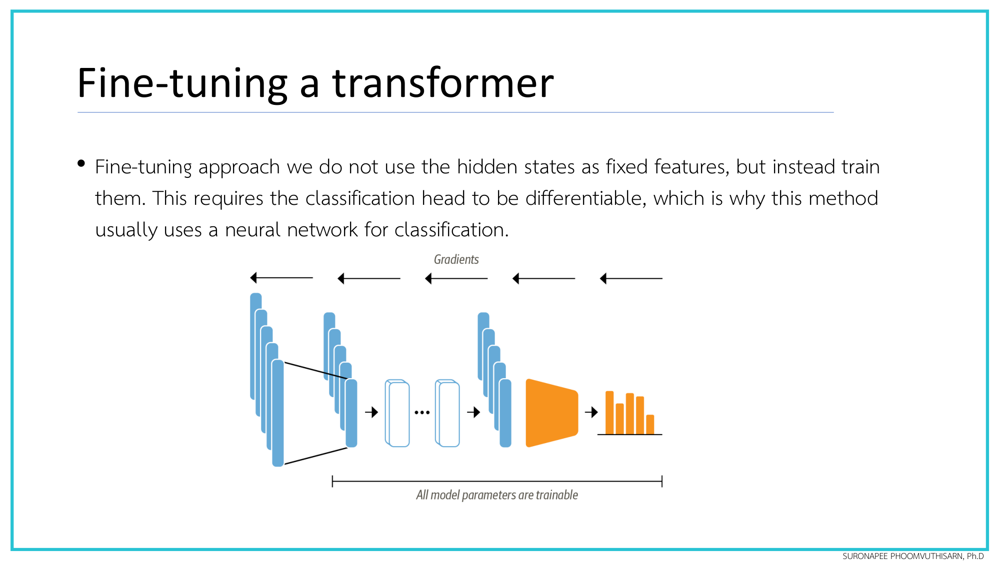
Fine-tuning ไม่ใช้ hidden state เป็น feature ตายตัว แต่เทรนมันด้วย. ต้องให้ classification head differentiable เพื่อให้ gradient ย้อนผ่าน head เข้าไปใน encoder ได้ จึงใช้ neural network เป็น classifier (logistic regression ของ scikit-learn ใน §10 ส่ง gradient กลับเข้า PyTorch ไม่ได้). ในรูปต่างจากหน้า 33 ตรงที่ลูกศร Gradients ยาวตลอดทุก layer และป้าย "All model parameters are trainable".
![Slide: Loading a Pretrained Model. Start with a pretrained DistilBERT model using AutoModelForSequenceClassification instead of AutoModel; it includes a classification head that we can train on top of the pretrained model; we only need to specify the number of labels (six) which determines the head's output size. Code: from transformers import AutoModelForSequenceClassification; num_labels = 6; model = (AutoModelForSequenceClassification.from_pretrained(model_ckpt, num_labels=num_labels).to(device))](../assets/slides/dl12-p39-automodel-sequence-classification.png)
from transformers import AutoModelForSequenceClassification
num_labels = 6
model = (AutoModelForSequenceClassification
.from_pretrained(model_ckpt, num_labels=num_labels)
.to(device))ต่างจาก AutoModel ตรงที่มี classification head มาด้วย. ระบุเพียง num_labels=6 ซึ่งกำหนดขนาด output ของ head. Head นี้เริ่มจาก weight สุ่ม (notebook แสดงคำเตือนว่า classifier.weight และ pre_classifier.bias เป็น MISSING ใน checkpoint) ส่วน body โหลดจาก checkpoint.
ตรงกับ notebook: "Trainable parameters: 66,958,086 / 66,958,086 (100.00%)" และ global_step=2500, epoch 5.0, train_runtime 193 วินาที. ตั้ง epoch สูงสุด 20 แต่ EarlyStopping หยุดเมื่อ macro F1 บน validation ไม่ดีขึ้นเกิน 0.001 สอง epoch ติด. Learning rate 2e-5 (ต่ำมากเพื่อไม่ทำลายความรู้เดิม). ผล: validation accuracy 0.9425, macro F1 0.921; test accuracy 0.9235, macro F1 0.8754 เทียบ feature extraction 0.635/0.531.
| วิธี | trainable parameter | accuracy | macro F1 |
|---|---|---|---|
| Baseline ทาย joy ทุกข้อ | 0 | 0.335 | 0.084 |
| Feature extraction + logistic regression (validation) | classifier เท่านั้น | 0.635 | 0.531 |
| LoRA r = 8 (test) | 742,662 | 0.9005 | 0.8497 |
| Full fine-tuning (test) | 66,958,086 | 0.9235 | 0.8754 |
AutoModelForSequenceClassification บน checkpoint ที่ hidden size 768 และ head เป็น Linear ชั้นเดียว Linear ชั้นนี้มี parameter กี่ตัว?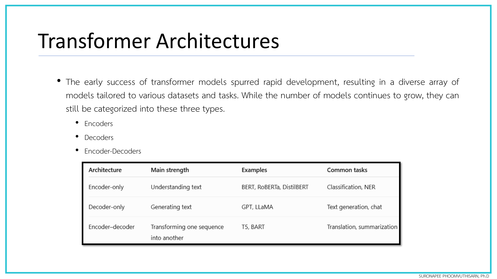
| Architecture | Main strength | Examples | Common tasks | ในบทนี้ |
|---|---|---|---|---|
| Encoder-only | Understanding text | BERT, RoBERTa, DistilBERT | Classification, NER | workshop DistilBERT, NER, BertViz |
| Decoder-only | Generating text | GPT, LLaMA | Text generation, chat | pipeline('text-generation') |
| Encoder–decoder | Transforming one sequence into another | T5, BART | Translation, summarization | T5 cross-attention, FLAN-T5-small ใน RAG, opus-mt-th-en |
ความสำเร็จช่วงแรกทำให้เกิดโมเดลจำนวนมาก แต่ยังจัดได้สามชนิดเดิมจาก Lesson 11 §12. หน้านี้เพิ่ม LLaMA ในกลุ่ม decoder-only และ NER, chat ในคอลัมน์งาน. วิธีจำ: encoder มองเห็นทั้งประโยค (ไม่มี causal mask) จึงเข้าใจดี; decoder มองเฉพาะอดีตจึงสร้างทีละ token; encoder–decoder ใช้ cross attention เชื่อมสองลำดับ.
pipeline() = preprocessing → model inference → postprocessing; งาน: text-classification, ner (aggregation_strategy="simple"), question-answering (extractive, ไม่รองรับใน 5.x), text-generation, summarization, translationlast_hidden_state[:, 0] [batch, 768], แช่แข็ง body. Fine-tuning: AutoModelForSequenceClassification(num_labels=6), head differentiablepipeline() และเลือกชื่องานกับชนิด Transformer ให้ตรงกัน พร้อมอ่านผล NER/QA ได้; (3) คำนวณ softmax จาก logit และรู้ว่าแผนภาพในสไลด์พิมพ์ 99.89% ไม่ตรงกับ logit; (4) จับคู่หกวิธีใช้ pretrained model กับสถานการณ์; (5) คำนวณ parameter ของ LoRA (2dr), scale α/r และ trainable 742,662 ของ workshop; (6) คำนวณ cosine similarity และอธิบายว่าทำไม similarity ไม่ใช่ความถูกต้อง; (7) อ่าน input_ids, special token, subword และ attention_mask ได้; (8) ดึง [CLS] hidden state (shape) และเปรียบเทียบ feature extraction, LoRA, full fine-tuning ด้วยตัวเลขจริง.
| หน้า | เนื้อหา | สถานะ |
|---|---|---|
| 1 | ปก Part4: Transfer Learning and Transformers for NLP | etc — สไลด์ปก (ชื่อหัวข้อ, ภาคเรียน, เวลาเรียน) ไม่มีเนื้อหาวิชา |
| 2 | LLMs | ✓ หัวข้อ 1 (รูป) |
| 3 | The Hugging Face | ✓ หัวข้อ 1 (รูป) |
| 4 | Why use Hugging Face | ✓ หัวข้อ 1 (รูป + ตาราง) |
| 5 | Hugging Face Ecosystem | ✓ หัวข้อ 1 (รูป) |
| 6 | Three Core Libraries | ✓ หัวข้อ 1 (รูป + ตาราง) |
| 7 | Using Transformer — pipeline() | ✓ หัวข้อ 2 (รูป) |
| 8 | Example of Text Classification | ✓ หัวข้อ 2 (รูป + โค้ด) |
| 9 | Example of Name Entity Recognition | ✓ หัวข้อ 3 (รูป + โค้ด + ตารางผล) |
| 10 | Example of Question Answering | ✓ หัวข้อ 3 (รูป) |
| 11 | Example of Text Generation | ✓ หัวข้อ 3 (รูป) |
| 12 | Example of Summarization | ✓ หัวข้อ 3 (รูป) |
| 13 | Example of Machine Translation | ✓ หัวข้อ 3 (รูป + ตารางงาน) |
| 14 | Using Tokenizer and Model | ✓ หัวข้อ 4 (รูป + คำนวณ softmax) |
| 15 | Visualize Attention Weights — BertViz | ✓ หัวข้อ 4 (รูป + โค้ด) |
| 16 | Continue… — T5 cross-attention | ✓ หัวข้อ 4 (รูป + โค้ด) |
| 17 | Transfer Learning in NLP | ✓ หัวข้อ 5 (รูป) |
| 18 | Approaches for Using and Adapting Pre-trained Models | ✓ หัวข้อ 5 (รูป + ตาราง) |
| 19 | PEFT: Why LoRA? | ✓ หัวข้อ 6 (รูป) |
| 20 | How LoRA Works | ✓ หัวข้อ 6 (รูป + สูตร + คำนวณ 12,288) |
| 21 | Applying LoRA to Transformer Attention | ✓ หัวข้อ 6 (รูป + โค้ด + คำนวณ 742,662) |
| 22 | RAG | ✓ หัวข้อ 7 (รูป + คำนวณ cosine) |
| 23 | Example on Text Classification | ✓ หัวข้อ 8 (รูป + แก้ label) |
| 24 | Kaggle | ✓ หัวข้อ 8 (รูป) |
| 25 | Load a Dataset | ✓ หัวข้อ 8 (รูป + โค้ด) |
| 26 | Explore the Dataset | ✓ หัวข้อ 8 (รูป + โค้ด) |
| 27 | Explore Class Distribution | ✓ หัวข้อ 8 (รูป + คำนวณ imbalance) |
| 28 | How Long Are Our Tweets? | ✓ หัวข้อ 8 (รูป + โค้ด) |
| 29 | Preparation — AutoTokenizer | ✓ หัวข้อ 9 (รูป + โค้ด) |
| 30 | How Tokenizer works | ✓ หัวข้อ 9 (รูป + โค้ด + ตาราง ID) |
| 31 | Tokenizing the Whole Dataset | ✓ หัวข้อ 9 (รูป + โค้ด + special token) |
| 32 | Training a Text Classifier | ✓ หัวข้อ 10 (รูป + ตาราง) |
| 33 | Using a Transformer as a Feature Extractor | ✓ หัวข้อ 10 (รูป) |
| 34 | Load a Pretrained Model — AutoModel | ✓ หัวข้อ 10 (รูป + โค้ด) |
| 35 | Extracting the last hidden states | ✓ หัวข้อ 10 (รูป + โค้ด) |
| 36 | Extracting the last hidden states (2) | ✓ หัวข้อ 10 (รูป + โค้ด) |
| 37 | Adding a Classification Head | ✓ หัวข้อ 11 (รูป) |
| 38 | Fine-tuning a transformer | ✓ หัวข้อ 11 (รูป) |
| 39 | Loading a Pretrained Model — AutoModelForSequenceClassification | ✓ หัวข้อ 11 (รูป + โค้ด + คำนวณ 66,958,086) |
| 40 | Transformer Architectures | ✓ หัวข้อ 12 (รูป + ตาราง) |
สงสัยตรงไหน ถามได้เลยในแชท — ผมเป็นผู้สอนของคุณ ถามซ้ำได้ ถามลึกได้ ไม่ต้องเกรงใจ.